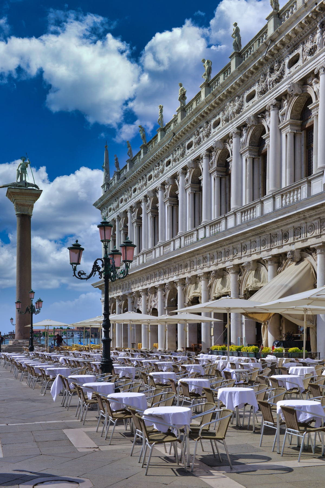
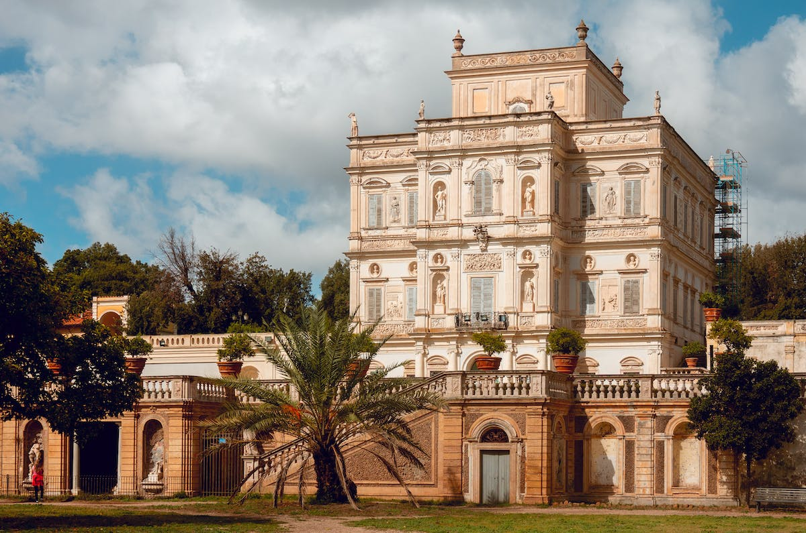
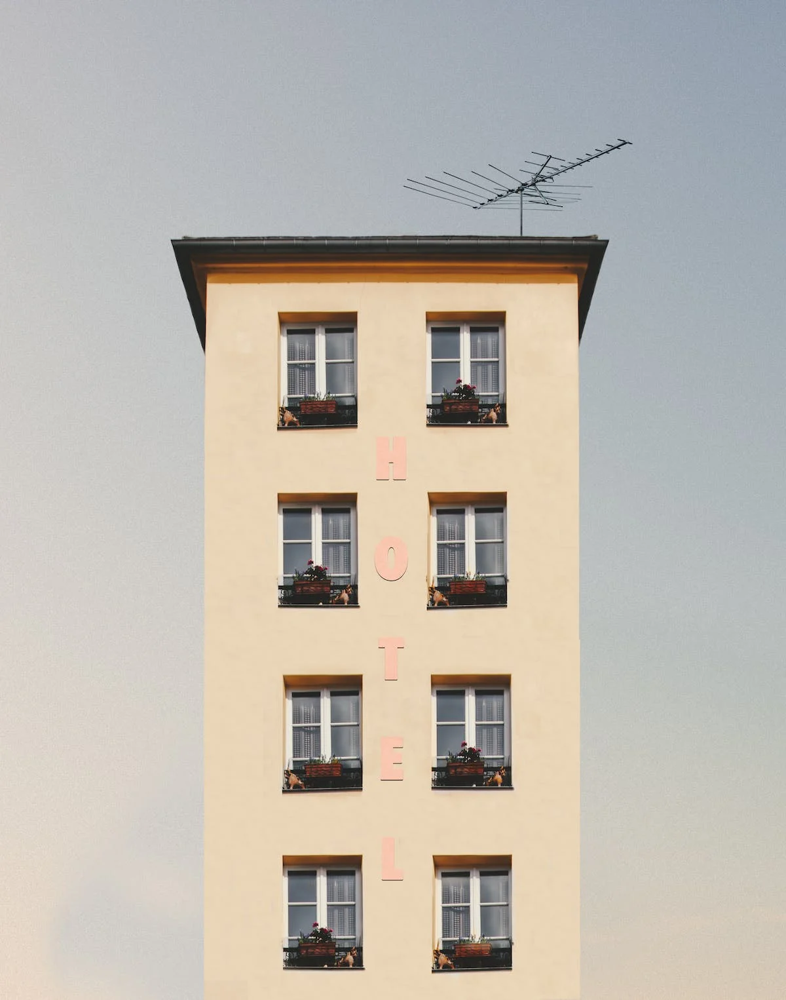
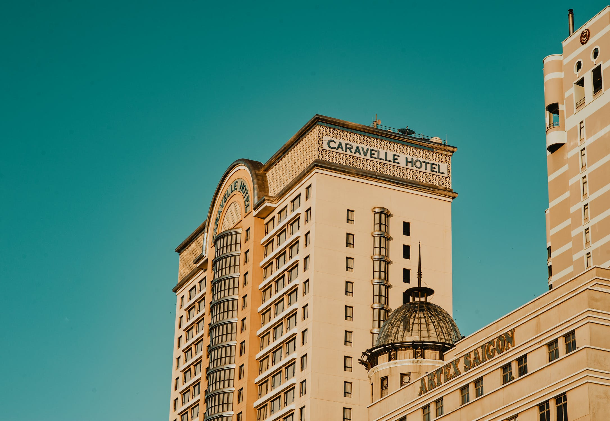

Beste hotels om in te verblijven tijdens je trip naar Rome

Hotel shivey, dit is een klassiek romeins hotel met maar 25 kamers.
Niet erg veel dus, bezoekers van het hotels vinden dat dit juist een
pluspunt is: ‘Het geeft zoveel meer sfeer met minder mensen’. Het
hotels is gelegen midden van Rome en daarom het perfecte hotel om in
te verblijven voor een stedentrip. Het hotel is helaas vrij prijzig,
namelijk 999 euro per nacht. Maar dan heb je wel echt wat.
- Kindvriendelijk
- Goed gelegen
- Monumentaal
- 5 sterren

Hotel vazz, dit is het meest luxe hotel van Rome. Met waar liefst 50
kamers een geweldig verblijf. Als je het gebouw typisch Italiaans,
door vorm en kleur gebruik. Het hotel is gelegen aan de rand van her
centrum, aan de zee kant. Perfect dus voor degene die een stedentrip
combineren met een strandvakantie. Door de luxe status van dit hotel
is de prijs daar ook naar, namelijk 1599 euro per nacht.
- Kindvriendelijk
- Dicht bij zee
- Monumentaal
- 5+ sterren

Hotel back, dit hotel is erg geschikt voor backpackers. Je kunt hier
namelijk veel mede-backpackers ontmoeten. Het is een goedkoop hotel
midden in het centrum van Rome. Het kost namelijk maar 66 euro per
nacht. Maar dan zit geen ontbijt en wifi bij. Dit is er helaas ook
niet bij te boeken.
- Mede reizigers
- Centrale plek
- Monumentaal
- geen wifi

Hotel ploie, ook dit is een geweldig hotel. Naar mijn mening het beste
hotel uit dit lijstje. Het is van alle gemakken voorzien en is goed
betaalbaar. De services is geweldig en het personeel is attent. Het
hotel kost maar 115 euro per nacht. Het is gelegen in het midden van
het centrum en graag bezocht door jonge reizigers.
- Mede reizigers
- Centrale plek
- Geweldige services
- Wifi